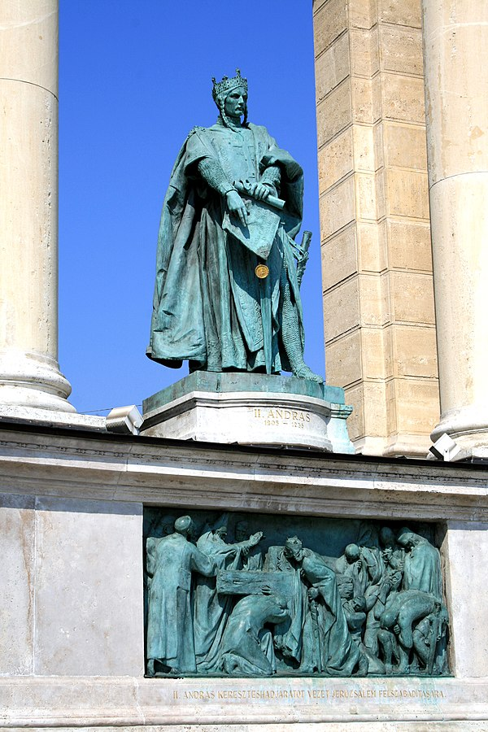
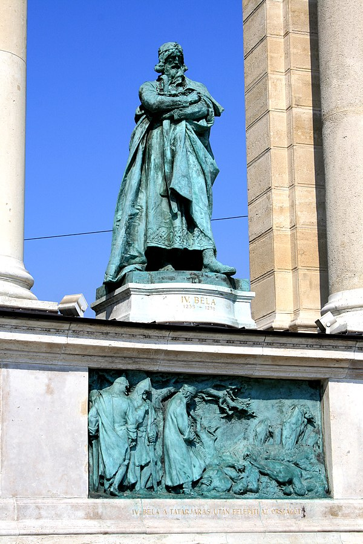
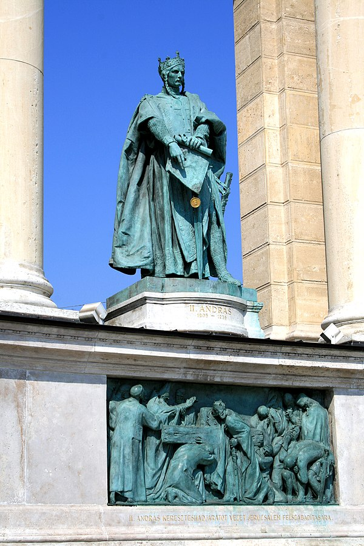
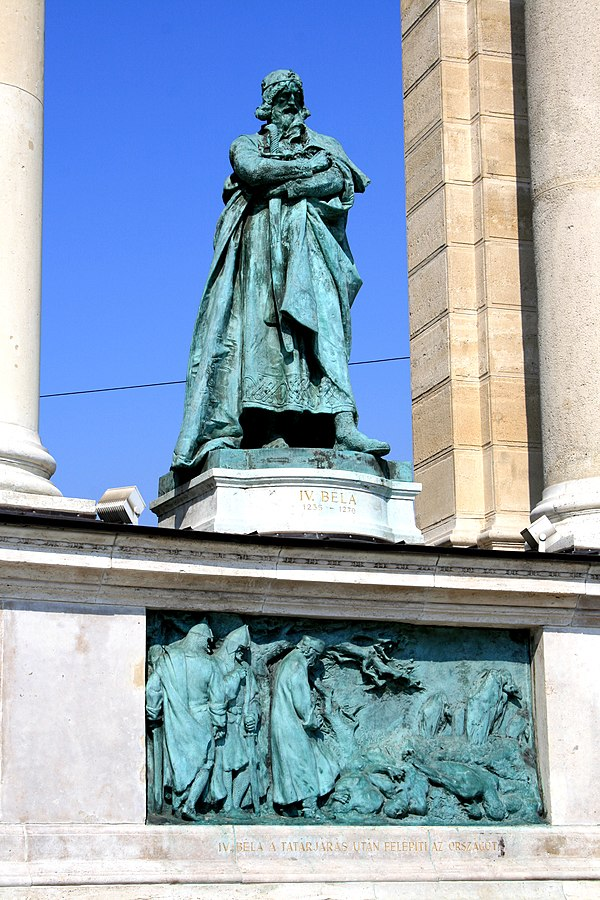

Tanácsköztársaság alatt, 1919. május 1-jén az egészet vörös drapériával vonták be, Gábriel arkangyal szobrát obeliszkké alakították, és eléje Marx 7 méteres gipszből öntött alakját állították. A Habsburg királyok (I. Ferdinánd, III. Károly, Mária Terézia, II. Lipót és Ferenc József) szobrát kiemelték és Vignali Rafael öntödei vállalatához szállították. Ekkor tört össze az eredeti Ferenc József szobor, amelyet pár ún. proletár vert szét. A két világháború között ezeket a szobrokat ismét felállították. Az új Ferenc József-szobor (immár nem katonaruhában, hanem koronázási ruhában, azonban korona nélkül) 1926-ra készült el.
A monumentális mű a magyarság nagyságát, ezeréves államiságát jelképezte, azonban a tér szerkezete 1929 után megváltozott, amikor elhelyezték a téren a Hősök emlékkövét (akkoriban „Hősök országos emlékköve” volt a neve), amelyre nézve tiszteleghettünk hőseink előtt.

 


